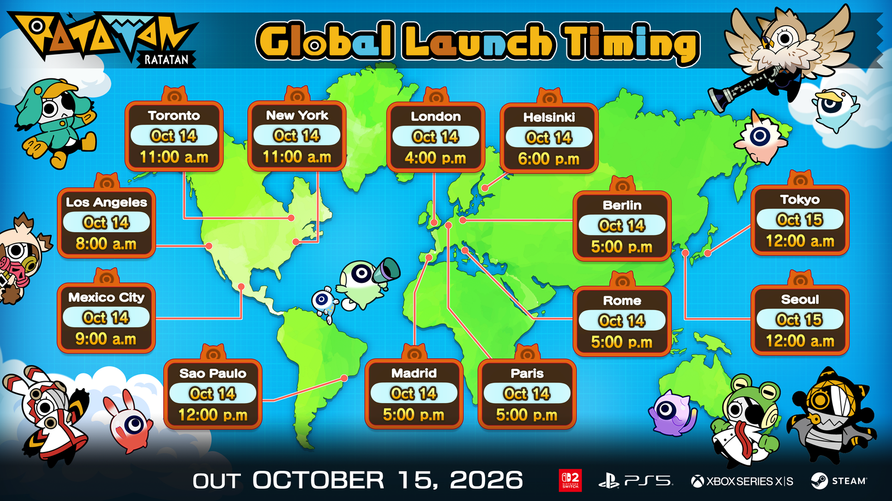
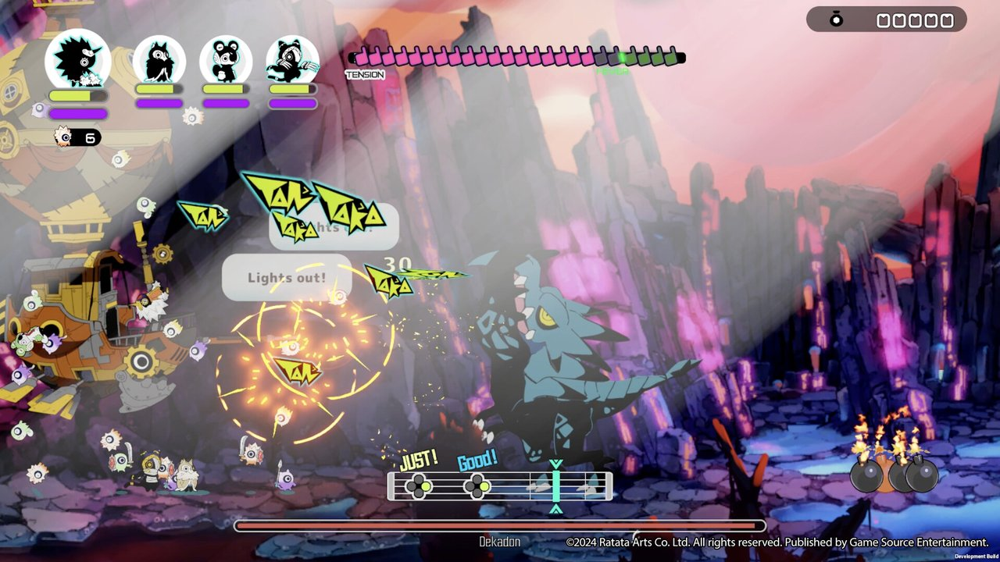
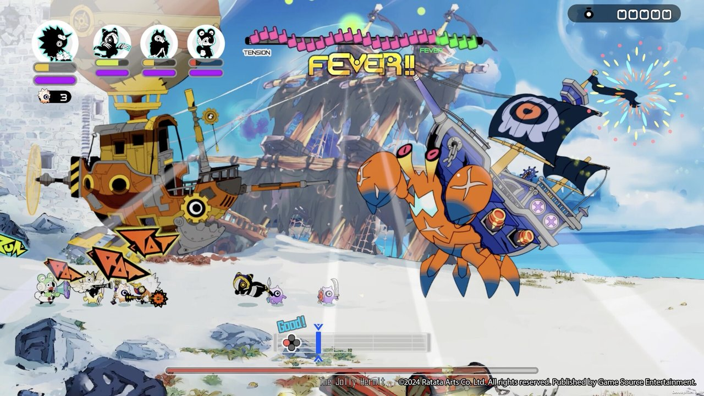

라타탄 출시일 10월 15일 서울 0시 오픈, PS5 스위치 2 PC Xbox 4기종 구매 정리
라타탄은 10월 15일 목요일, 서울 기준 0시에 열립니다. 달력으로는 내일이지만 시계로는 오늘 밤 자정(?)이에요. PS5·닌텐도 스위치 2·Xbox Series X|S·PC(스팀) 네 기종이 같은 순간에 풀리는데요, 기종마다 한국어판 여부와 사는 길이 갈려서 하루 전인 10월 14일 기준으로 한 번에 모아 봤습니다.

스팀 상점 페이지의 라타탄 대표 이미지, 금빛 나팔 든 캐릭터들이 한가득이죠
이미지 출처: 스팀 스토어 라타탄 페이지
1. 출시일과 서울 시각
라타탄 1.0 정식 출시일은 2026년 10월 15일(목)이고, 서울에서는 15일 0시, 그러니까 14일 밤 자정에 네 기종이 동시에 열립니다.
6월 25일 공지 직전까지 7월 16일 예정이었다가 그 공지로 한 번 밀린 끝에 잡힌 날인데요, 10월 14일 현재 퍼블리셔 공지와 스팀 뉴스에는 출시일이나 기종을 다시 바꾼다는 안내가 올라와 있지 않았습니다. 서울 시각은 스팀 공지에 붙은 공식 이미지에서 가져왔어요.
2. 나라별 시각 환산
공식 이미지의 서울 표기는 10월 15일 12:00 a.m.이고, 이건 낮 12시가 아니라 한밤 0시를 뜻합니다.

라타탄 공식 «Global Launch Timing» 이미지, 오른쪽 아래 Seoul 칸을 보세요
이미지 출처: 스팀 스토어 라타탄 뉴스(Version 1.0 Global Launch Times 공지, 2026.10.03)
보시면 지도 오른쪽 아래 Seoul 칸에 'Oct 15'와 '12:00 a.m.'이 적혀 있고, 바로 위 Tokyo 칸도 똑같은 값이에요. 맨 아래에는 'OUT OCTOBER 15, 2026' 문구와 스위치 2·PS5·Xbox Series X|S·스팀 로고가 나란히 붙어 있고요.
| 도시 | 공식 이미지 표기 | 읽는 법 |
|---|---|---|
| 서울 | 10월 15일 12:00 a.m. | 15일 0시(14일 밤 자정) |
| 도쿄 | 10월 15일 12:00 a.m. | 서울과 같은 시각 |
| 런던 | 10월 14일 4:00 p.m. | 14일 오후 4시 |
| 뉴욕 | 10월 14일 11:00 a.m. | 14일 오전 11시 |
| 로스앤젤레스 | 10월 14일 8:00 a.m. | 14일 오전 8시 |
같은 순간인데 미주는 14일 아침이고 서울은 15일 0시라서 날짜만 하루 갈립니다. 해외 글에서 'Oct 14'라고 적혀 있어도 같은 출시를 말하는 거니까 헷갈리지 마세요.
3. 기종과 한국어판
출시 기종은 글로벌 기준 PC(스팀)·스위치 2·PS5·Xbox Series X|S 4종이고, 한국어판 기사에 이름이 오른 건 이 가운데 PC·PS5·스위치 2 3종입니다.
| 기종 | 글로벌 출시 | 한국어판 기사 | 한국에서 확인된 판매 형태(10/14) |
|---|---|---|---|
| PC(스팀) | O | O | 스팀 얼리 액세스 27,000원, 정식가 미정 |
| PS5 | O | O | 패키지 49,800원, 디지털 원화 가격 확인 불가 |
| 스위치 2 | O | O | 패키지 49,800원, 디지털 원화 가격 확인 불가 |
| Xbox Series X|S | O | 기사에 언급 없음 | 한국 스토어 상품 페이지 있음, 사전 주문 |
- 스팀 : 언어 표에서 한국어는 인터페이스와 자막에 체크돼 있고 음성 열은 비어 있습니다(얼리 액세스 표기 기준). Windows 전용이고요.
- 퍼블리셔 공지 : 자막 언어 목록에 Korean이 들어 있고, 음성 언어는 따로 적혀 있지 않아요.
- Xbox : 스토어 지원 언어가 '11개'라고만 나오고 목록은 없습니다.
한국어판 이야기는 H2 인터렉티브 쪽 유통 소식에서 나온 건데요, 거기에 Xbox가 없다고 해서 Xbox판이 한국어를 못 한다는 뜻은 아닙니다.
4. 한국 가격과 판매 형태
원화로 확인된 값은 패키지 49,800원, Xbox 스토어 39,510원·45,360원, 스팀 얼리 액세스 27,000원이 전부이고, 모두 10월 14일에 본 숫자입니다.
| 구분 | 원화(10/14 확인) | 비고 |
|---|---|---|
| PS5·스위치 2 패키지 '데이원 에디션' | 49,800원 | 예약은 9월 22일 시작(게임포커스 보도) |
| Xbox 스토어 기본판 | 39,510원 | 정가 43,900원에서 10% 할인가로 표시, 버튼은 '사전 주문' |
| Xbox 스토어 디럭스 | 45,360원 | 정가 50,400원에서 10% 할인가로 표시 |
| 스팀(얼리 액세스) | 27,000원 | 정식판 가격은 미정 |
스팀 페이지를 열어 보니 정식 버전 가격이 아직 정해지지 않았고 앞서 해보기(얼리 액세스)가 끝난 뒤 오를 수 있다는 문구가 적혀 있었습니다. 27,000원은 오늘 기준 값이라는 것만 기억해 두세요.
달러 값도 같이 돌아다니는데요, 영문권 정가는 디지털 Standard $34.99, Deluxe $39.99이고 패키지 권장가는 $39.99입니다. 디지털은 사전 예약 때 10% 할인이 붙어 $31.49·$35.99로 표시됩니다. 한국 스토어 가격이 아니라서 환율로 바꿔 쓸 숫자는 아니에요.
보너스 DLC는 퍼블리셔 공지 기준으로 Cobun 세트·장비&액세서리 세트·보급품 세트 3종이고, 6월 25일 연기 공지 때 이미 예약해 둔 분들께 보상으로 준다고 적혀 있습니다. 지금 예약에도 붙는지는 안내가 없었어요. 한국 Xbox 스토어에는 사전 예약 특전(영령도 쓱쓱소드)과 디럭스 추가 세트 구성이 표시되는데, 영문권 최초 예약자 한정 코드와 같은 혜택인지는 확인 불가입니다.
5. 얼리 액세스를 하던 분들
해외 보도 기준으로 스팀 얼리 액세스 구매자는 1.0에서 세이브가 승계되고 'Spirit Sword Banbansord'가 자동 지급됩니다.
- 1.0 추가 내용 : 에피소드 3·4, 마지막 월드와 최종 보스, 오케스트라 사운드트랙이 들어간다고 보도됐습니다.
- 10/14 확인 : 스팀 상점 페이지는 아직 앞서 해보기 표기 그대로였고, 출시일 칸도 얼리 액세스를 연 '2025년 9월 18일'로 남아 있었어요.
승계와 지급 내용은 공식 안내를 오늘 직접 다시 열어 확인한 항목이 아니라서 '보도 기준'으로만 적었습니다. 정식 전환 뒤 스팀 페이지에서 한 번 더 보시면 됩니다.
6. 7월에서 10월로 미뤄진 경위
라타탄 1.0은 6월 25일 공지 직전까지 7월 16일 출시 예정이었다가, 그 공지로 10월 15일로 한 번 연기됐습니다. 스팀 뉴스(9월 15일)에 따르면 처음 공개한 로드맵에서는 1.0을 봄 무렵으로 잡았다고 해요.
이유는 멀티플레이 안정화, 버그 수정, 플랫폼별 최종 조정이라고 공지됐는데요, 최대 4인 협동 게임이라 멀티 쪽을 먼저 다듬겠다는 설명은 납득이 갑니다. 검색하다 보면 '7월 16일'이 적힌 예전 기사가 아직 많이 남아 있더라고요. 그 날짜는 연기 전 값이니 지나치셔도 됩니다.
7. 라타탄은 어떤 게임인가
라타탄은 박자에 맞춰 싸우는 리듬 로그라이크 액션이고, 최대 4인 협동으로 즐길 수 있습니다.
개발은 TVT와 Ratata Arts, 글로벌 퍼블리셔는 Game Source Entertainment이고, 한국어판 유통은 H2 인터렉티브가 맡았습니다. 스팀 얼리 액세스는 스팀 표기로 2025년 9월 18일(한국 시각 19일 0시)에 시작했고요.
스팀 상점 표기를 보면 싱글 플레이어와 온라인 협동이 둘 다 붙어 있고, 컨트롤러 완벽 지원·DualSense 컨트롤러 지원·스팀 클라우드·가족 공유 항목도 있더라고요. 컨트롤러 완벽 지원이 표기돼 있어 패드로도 즐길 수 있습니다.

스토어 스크린샷 한 컷, 아래 박자 줄에 JUST!·Good! 판정이 뜹니다
이미지 출처: 스팀 스토어 라타탄 페이지(스크린샷)
지금 보시는 화면은 보랏빛 협곡을 배경으로 한 전투인데요, 아래쪽 박자 줄에 'JUST!'와 'Good!' 판정이 뜨고 위쪽에는 'TENSION' 게이지가 길게 깔려 있습니다. 한쪽 귀퉁이에 'Development Build' 표기가 보여서 정식판 화면과는 조금 다를 수 있어요.

다른 컷은 해변 보스전, 화면 한가운데 'FEVER!!' 문구가 떴습니다
이미지 출처: 스팀 스토어 라타탄 페이지(스크린샷)
이쪽은 해변에서 거대한 게 모양 보스와 맞붙는 장면이고, 위쪽 게이지 오른쪽 끝의 초록 칸이 'FEVER' 구간으로 표시돼 있네요. 개인적으로는 박자 판정과 전투가 한 화면에서 같이 돌아가는 구성이 제일 눈에 들어오는데요, 직접 쳐 본 건 아니라서 손맛 얘기는 출시 뒤 정리에서 말씀드릴게요.
8. 자주 묻는 질문
Q. 스위치(1세대)나 PS4로도 나오나요?
공지된 기종 목록에는 스위치 1세대와 PS4가 없습니다. 지금 쓰는 기기가 이전 세대라면 네 기종 중 하나로 옮겨 가야 한다는 얘기예요.
Q. PC 사양은 어느 정도 필요한가요?
스팀 페이지(얼리 액세스 표기 기준, 10/14 확인)의 최소 사양은 Windows 10 64비트·RAM 8GB·GeForce GTX 950급, 권장은 Windows 11 64비트·RAM 16GB·GeForce RTX 2060급이고 저장 공간은 둘 다 10GB입니다. 온라인 협동을 하려면 NAT 유형이 개방형이나 보통형이어야 한다는 안내도 붙어 있어요. 정식판 사양은 출시 뒤 스토어에서 한 번 더 보세요.
9. 아직 확인 못 한 것
- 한국 PSN·닌텐도 e숍 디지털 원화 가격 : 확인 불가
- Xbox판 한국어 지원 : 지원 언어 11개라는 표기만 확인, 목록은 확인 불가
- 스팀 1.0 정식 원화 가격 : 미정 문구뿐이라 출시 직후 스토어 확인 필요
- 한국어 음성 지원 : 스팀 표기(얼리 액세스 기준)는 음성 열이 비어 있음, 정식판 표기는 출시 후 확인
- Game Pass 카탈로그 포함 여부 : 확인 불가
여기까지가 출시 하루 전 정리였는데요. 자정이 지나면 스팀 정식가나 PSN·e숍 가격 같은 빈칸이 하나씩 채워질 테니, 값이 정해지는 대로 직접 확인한 내용을 묶어서 출시 후 정리 글로 올릴게요. 오늘 밤 자정에 맞춰 달리실 분들, 즐거운 첫 박자 되세요 :)
참고한 곳 (2026.10.14 기준)
· 스팀 스토어 라타탄 페이지
· Game Source Entertainment 출시일 공지
· Xbox 한국 스토어 라타탄
· 스팀 뉴스 허브 라타탄 공지
· 보도 : 게임메카 · 게임포커스 · WorthPlaying · FullCleared